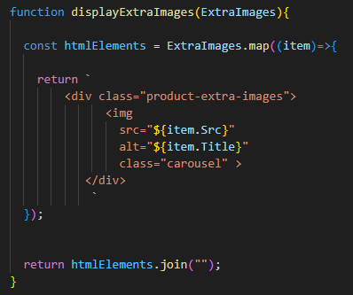

Week 10
Final Project
created a pokemon card for the final project that we are doing and fetched the api to be able to use that information on the website.
.png)
.png)
.png)
Trello Card:
My final trello card extra product images. currently is still a work in progress but I am able to pull the images from the JSON file and get them onto the page.
Week 10 Notes
Javascript the Hard parts:
callbacks and higher order functions:
create a function takes no input (useless functions)
set a parameter to take input to put into a function.
global memory first line define function second line declare a variable third line result
that is an execution context
local memory
array: values
declare an output
take array and make it into a for loop
we could generalizre the function to be able to pass in specific function, example +5, /4, -8, etc.
you can put functions inside of function parameters example function nameAndAge(name, age){} function age(){}
call stack calls and uses a function that is inside the function parameter to get that to send it to the next function to be able to use the results from that function.
functions in javascript = first class objects
they have all the properties of objects. they van be assigned to variables, then passed as arguments into functions, returned as values from functions.
higher order functions is the outer function. functions that are passed in are callback functions.